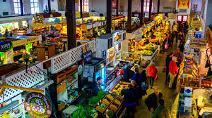
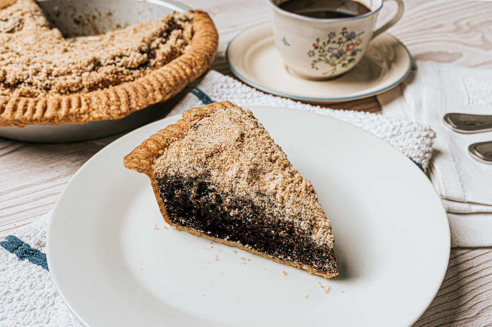
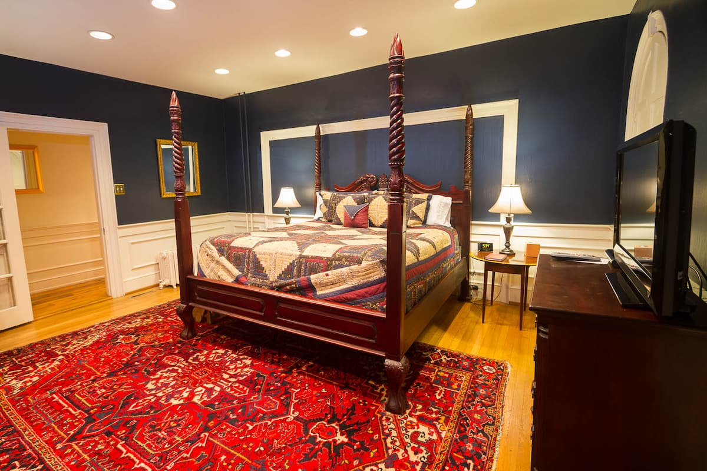

Lancaster & Gettysburg
▶ Philadelphia → Lancaster ~1.5 hrs | Lancaster → Gettysburg ~1 hr



Stops & Activities
Lancaster Central Market
One of America's oldest farmers markets. Graze on fresh-baked Amish bread, local cheeses, whoopie pies and shoofly pie.
Amish Countryside Drive
Wind through rolling farmland before heading to Gettysburg. Stop at roadside stalls for apple cider, honey, and jams.
Gettysburg Battlefield ✦
Self-guided car tour of the battlefield. Visit the National Military Park Visitor Center then explore charming downtown.
Mason Dixon Distillery
Small-batch distillery with seasonal small plates made from scratch. Perfect pre-dinner stop.
Food & Drink
Breakfast
Lancaster Central Market
Fresh bread, local cheeses, pastries — graze the stalls all morning.
Lunch
Dobbin House Tavern
Farm-fresh seasonal dishes in a candlelit historic tavern beneath exposed beams dating to 1776.
Drinks
Mason Dixon Distillery
Small-batch spirits and seasonal bites made from scratch on site.
Dinner
Sign of the Buck ✦
New American brasserie inspired by French cuisine in the historic Union Hotel. Local farm produce, excellent craft cocktails.
Must Try
Shoofly pie, whoopie pies, Amish chicken pot pie, chow-chow relish, and fresh apple cider from roadside farm stalls.
Where to Stay — Gettysburg
Hotel Gettysburg, Est. 1797
A historic gem on Lincoln Square in the heart of downtown, steps from the battlefield and Sign of the Buck restaurant. 119 rooms with modern amenities, complimentary WiFi, and on-site dining.
View on Agoda →
AirbnbGettysburg Airbnb Option 2
A cosy Airbnb in the Gettysburg area — check the listing for full details on amenities, location, and availability for your dates.
View on Airbnb → Airbnb
Airbnb
Gettysburg Airbnb Option 3
Another Airbnb option in the Gettysburg area — check the listing for full details on amenities, location, and availability for your dates.
View on Airbnb →Shepherdstown, Harpers Ferry & Luray
▶ Gettysburg → Shepherdstown ~1.5 hrs | → Harpers Ferry ~10 mins | → Luray ~1.5 hrs


Stops & Activities
Shepherdstown, WV (~2 hrs)
WV's oldest town. Coffee at Betty's, stroll cobblestone streets, browse galleries and bookshops. Quick drink by the Bavarian Inn's Potomac infinity pool.
Harpers Ferry — The Point ✦
Where the Shenandoah and Potomac Rivers merge. Jefferson Rock hike, Lower Town historic district, Virginius Island Trail.
Luray Caverns ✦
Vast underground cave systems with extraordinary stalactite formations and the Great Stalacpipe Organ. Allow 1–1.5 hrs.
Downtown Luray
Stroll Main Street, browse boutiques, unwind with a craft beer at Hawksbill Brewing Co. before dinner.
Food & Drink
Breakfast — Shepherdstown
Betty's ✦
Home of the world's best sausage gravy over hot biscuits. Jumbo lump crab cakes also stellar. Cash only.
Snack — Harpers Ferry
Bolivar Bakery
Cult cinnamon buns, sourdough rosemary olive bread, and the unmissable Pretzel Samosa.
Lunch — Harpers Ferry
Kelley Farm Kitchen
Farm-to-table with inventive plant-based dishes. Non-vegans leave just as impressed.
Drinks — Luray
Hawksbill Brewing Co.
Outdoor patio with mountain views. Perfect post-caverns unwind.
Dinner — Luray
The Chop House Bistro ✦
Top foodie pick in Luray — farm-to-table, elevated seasonal ingredients, great cocktails.
Dessert
Flotzie's Ice Cream
A beloved Luray local favourite. Simple and iconic.
Where to Stay — Luray
 Historic Inn
Historic Inn
The Mimslyn Inn
A historic Georgian Revival inn on rolling hills near the Shenandoah River, open since 1931. Outdoor pools, fire pits, walking paths, hammock garden, two restaurants including the Speakeasy bar. 2 mins from Luray Caverns.
View on Agoda →The Studio in Luray
A modern, clean and well-thought-out private tiny home studio with a kitchenette and Keurig coffee maker. Well-reviewed and affordable. Can also be used for Night 3 to avoid repacking.
View on Airbnb →Luray Airbnb Option 3
A third Airbnb option in the Luray area — check the listing for full details on amenities, location, and availability for your dates.
View on Airbnb →Shenandoah National Park
▶ Luray → Thornton Gap entrance ~30 mins


Hiking Trails
Blackrock Summit ✦
1.6 miles • ~1 hour • 340ft gain
Mostly flat trail to a stunning rocky summit with 360° mountain views. Best payoff-to-effort ratio in the park.
Little Stony Man Cliffs
1.6 miles • ~1 hour • Mile 39.1
Well-marked trail near Skyland Lodge leading to cliff-top views of the Shenandoah Valley.
Limberlost Trail
Flat loop • Old-growth forest
Peaceful, accessible loop through ancient trees. Ideal for a slow, romantic woodland walk.
Stony Man Summit
1.6 miles • Rock scramble • Valley views
Fun easy rock scramble leads to sweeping views of the Valley and Massanutten Mountain.
Other Activities
Skyline Drive
105 miles along the Blue Ridge crest with 75 overlooks. Enter at Thornton Gap and pull over whenever you want.
Kayaking / Tubing ✦
Float the Shenandoah River with Shenandoah River Outfitters. A warm August afternoon on the river is unforgettable.
Horseback Riding
Fort Valley Ranch guided trail rides into the George Washington National Forest. Beginner-friendly and very romantic.
Wildlife Spotting
Deer, wild turkeys, and black bears commonly spotted along Skyline Drive in August.
Stargazing at Big Meadows ✦
The Milky Way is visible with the naked eye on a clear August night. Bring a blanket. One of the most romantic moments of the trip.
Food & Drink
Lunch — Inside the Park
Pollock Dining Room, Skyland Lodge ✦
Regional farm-to-fork with stunning valley views. The Blackberry Ice Cream Pie is non-negotiable. Pork shank is consistently outstanding.
Drinks — Luray Area
River Hill Wine & Spirits
Family-owned farm winery along the Shenandoah River. Small-batch wines and corn whiskey.
Must Try
Homemade apple pie, apple butter, farm-raised trout, and fresh apple cider. Pick up apple butter from a roadside stall as a souvenir.

A full day in the mountains
Pick one or two hikes, drive Skyline Drive at your own pace, float the river in the afternoon, watch the sunset at an overlook, then stargaze at Big Meadows. You won't want to leave.
Where to Stay — Night 3
 Airbnb — Cabin
Airbnb — Cabin
Treehouse — Amazing Deck View & River Access
A beautiful A-frame cabin perched in the trees in a private mountain community, with mountain views and a short walk to the Shenandoah River. A truly romantic night in the mountains.
View on Airbnb →The Studio in Luray (2-night stay)
Stay two consecutive nights in Luray (Nights 2 & 3) to avoid repacking. A modern, clean private studio — convenient base for both Shenandoah day and the park stargazing.
View on Airbnb → Hotel — Charlottesville
Hotel — Charlottesville
Hampton Inn Charlottesville
A detour option — stay in charming Charlottesville (1.5 hrs south of Shenandoah) instead. Free hot breakfast daily, outdoor pool, fitness centre, free parking. Near UVA and Monticello. Note: adds ~30 mins to the DC drive next day.
View on Agoda →Washington DC
▶ Shenandoah → Washington DC ~1.5–2 hrs


Stops & Activities
Leisurely Lodge Breakfast
No rush — enjoy one last mountain morning before the drive to DC.
Your DC, Your Way
Since you've both been before, revisit a favourite neighbourhood, museum, or spot.
National Mall at Dusk ✦
A slow evening stroll as the monuments light up — one of the most beautiful urban walks in America at golden hour.
Food & Drink
Brunch
Call Your Mother Deli ✦
Wildly popular Jewish-style deli. The pastrami, egg and cheese on sesame bagel is one of the best breakfast sandwiches in the city.
Lunch
Ben's Chili Bowl
A DC institution on U Street since 1958. The half-smoke draped in chili is the quintessential DC food experience.
Dinner
Old Ebbitt Grill ✦
Washington's oldest saloon, steps from the White House. Seasonal oysters, jumbo lump crab cakes, classic American charm. Make a reservation.
Must Try in DC
The half-smoke at Ben's Chili Bowl, Chesapeake Bay oysters, and Maryland blue crab cakes at Old Ebbitt Grill.
Where to Stay — Washington DC
DC Downtown 1-Bedroom Suite
A modern, newly-renovated private townhouse suite in the vibrant Shaw neighbourhood of Northwest DC. Great food, bars, and easy Metro access right on the doorstep.
View on Airbnb →Elegant DC Escape — European Breakfast & Lounge
A stylish room at the AC Hotel Washington DC Convention Center with sleek modern design, European-inspired breakfast, and a lounge. Steps from museums, landmarks, and Capital One Arena.
View on Airbnb → Hotel — 4 Star
Hotel — 4 Star
Arlo Washington DC
Rated 9.4/10 — a stylish 4-star hotel near the National Mall with a rooftop pool, rooftop bar, two restaurants, Spanish cuisine, fitness centre, and balcony rooms. One of DC's highest-rated hotels.
View on Agoda → Hotel — Boutique
Hotel — Boutique
Kimpton Carlyle Hotel, Dupont Circle
An Art Deco boutique gem 3 blocks from Dupont Circle's fountain. Free morning coffee, complimentary evening wine receptions, fine dining at The Riggsby restaurant, and a charming residential neighbourhood setting.
View on Agoda →Annapolis & Home
▶ DC → Annapolis ~45 mins | Annapolis → Philadelphia ~2 hrs


Stops & Activities
Slow Morning in DC
Coffee, a last stroll, no rush. Soak up the final morning of the honeymoon before hitting the road.
Annapolis, Maryland ✦
A charming colonial harbour town on the Chesapeake Bay. Wander the waterfront and find a great spot for the farewell lunch.
Drive Home to Philadelphia
A comfortable 2-hour drive home — windows down, good music, and a week of beautiful memories.
Food & Drink
Breakfast — DC
Call Your Mother Deli
If you didn't make it yesterday — go early to beat the queue. Worth every minute of the wait.
Lunch — Annapolis
Maryland Blue Crab ✦
Steamed blue crabs with Old Bay seasoning at a waterfront restaurant. Messy, communal, absolutely delicious. The perfect final meal.
The Farewell Feast
Maryland blue crabs are the star of Annapolis. Order them whole, get your hands dirty, and savour every bite.
The end — and the beginning
Five days, three states, one national park, two rivers, countless good meals, and a lifetime of memories. Welcome home, Irvin & Clar.